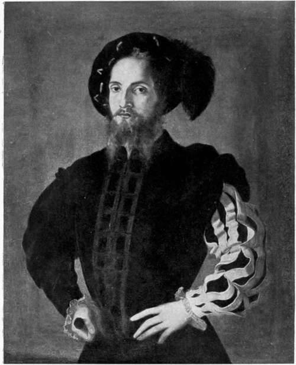

Chapter XV. Macchiavelli's Legation
Description
This section is from the book "The Life Of Cesare Borgia", by Rafael Sabatini. Also available from Amazon: The Life of Cesare Borgia.
Chapter XV. Macchiavelli's Legation
On October 2 news of the revolt of the condottieri and the diet of Magione had reached the Vatican and rendered the Pope uneasy. Cesare, however, had been informed of it some time before at Imola, where he was awaiting the French lances that should enable him to raid the Bolognese and drive out the Bentivogli.
Where another might have been paralyzed by a defection which left him almost without an army, and would have taken the course of sending envoys to the rebels to attempt to make terms and by concessions to patch up a treaty, Cesare, with characteristic courage, assurance, and promptitude of action, flung out officers on every side to levy him fresh troops.
His great reputation as a condottiero, the fame of his wealth and his notorious liberality, stood him now in excellent stead. The response to his call was instantaneous. Soldiers of fortune and mercenaries showed the trust they had in him, and flocked to his standard from every quarter. One of the first to arrive was Gasparo Sanseverino, known as Fra cassa, a condottiero of great renown, who had been in the Pontifical service since the election of Pope Alexander. He was a valuable acquisition to Cesare, who placed him in command of the horse. Another was Lodovico Pico della Mirandola, who brought a small condotta of 60 lances and 60 light horse. Ranieri della Sassetta rode in at the head of 100 mounted arbalisters, and Francesco de Luna with a body of 50 arquebusiers.1
ALLEGED PORTRAIT OF CESARE BORGIA, ATTRIBUTED TO RAFFAELE SANZIO. (In the Borghese Gallery, Rome.)
Valentinois sent out Raffaele dei Pazzi and Galeotto Pallavicini, the one into Lombardy to recruit 1,000 Gascons, the other to raise a body of Swiss mercenaries. Yet, when all is said, these were but supplementary forces; the main strength of Cesare's new army lay in the troops raised in the Romagna, which, faithful to him and confident of his power and success, rallied to him now in the hour of his need. Than this there can be no more eloquent testimony to the quality of his rule. In command of these Romagnuoli troops he placed such Romagnuoli captains as Dionigio di Naldo and Marcantonio da Fano, thereby again affording proof of his wisdom, by giving these soldiers their own compatriots and men with whom they were in sympathy for their leaders.
With such speed had he acted, and such was the influence of his name, that already, by October 14, he had assembled an army of upwards of 6,000 men, which his officers were diligently drilling at Imola, whilst daily now were the French lances expected, and the Swiss and Gascon mercenaries he had sent to levy.
It may well be that this gave the confederates pause, and suggested to them that they should reconsider their position and ask themselves whether the opportunity for crushing Cesare had not slipped by whilst they had stood undecided.
It was Pandolfo Petrucci who took the first step towards a reconciliation, by sending word to Valentinois that it was not his intention to take any measures that might displease his Excellency. His Excellency will no doubt have smiled at that belated assurance from the sparrow to the hawk. Then, a few days later, came news that Giulio Orsini had entered into an agreement with the Pope. This appeared to give the confederacy its death blow, and Paolo Orsini was on the point of setting out to seek Cesare at Imola for the purpose of treating with him which would definitely have given burial to the revolt when suddenly there befell an event which threw the scales the other way.
1 The arquebus, although it had existed in Italy for nearly a century, was only just coming into general use.
Cesare's people were carrying out some work in the Castle of S. Leo, in the interior of which a new wall was in course of erection. For the purposes of this, great baulks of timber were being brought into the castle from the surrounding country. Some peasants, headed by one Brizio, who had been a squire of Guidobaldo's, availed themselves of the circumstance to capture the castle by a stratagem. Bringing forward some great masses of timber and felled trees, they set them down along the drawbridge in such a manner as to prevent its being hoisted. That done, an attack in force was directed against the fortress. The place, whose natural defences rendered it practically impregnable, was but slightly manned ; being thus surprised, and unable to raise the bridge, it was powerless to offer any resistance, so that the Montefeltre peasants, having killed every Borgia soldier of the garrison, took possession of it and held it for Duke Guidobaldo.
This capture of S. Leo was as a spark that fired a train. Instantly the hardy hillmen of Urbino were in arms to reconquer Guidobaldo's duchy for him. Stronghold after stronghold fell into their hands, until they were in Urbino itself. They made short work of the capital's scanty defenders, flung Cesare's governor into prison, and finally obtained possession of the citadel.
It was the news of this that caused the confederates once more to pause. Before declaring themselves, they waited to see what action Venice would take, whilst in the meantime they sought shelter behind a declaration that they were soldiers of the Church and would do nothing against the will of the Pontiff. They were confidently assured that Venice would befriend Guidobaldo, and help him back to his throne now that his own people had done so much towards that end. It remained, however, to be seen whether Venice would at the same time befriend Pesaro and Rimini.
Instantly Cesare Borgia who was assailed by grave doubts concerning the Venetians took his measures. He ordered Bartolomeo da Capranica, who was chief in command of his troops in Urbino, to fall back upon Rimini with all his companies, whilst to Pesaro the duke dispatched Michele da Corella and Ramiro de Lorqua.
Continue to: